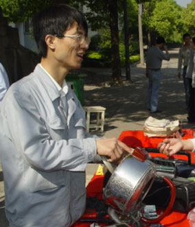
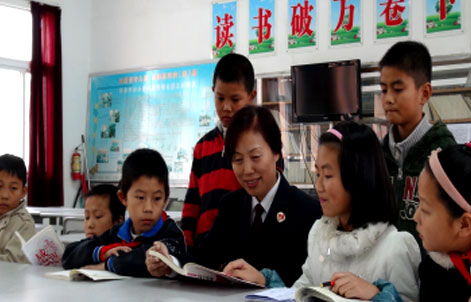
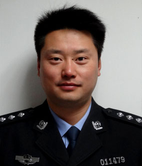
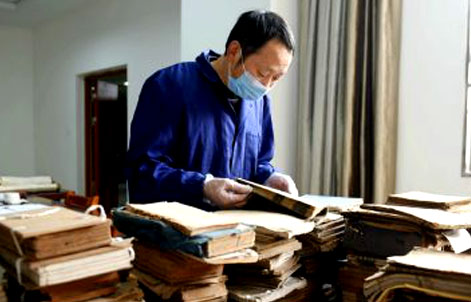
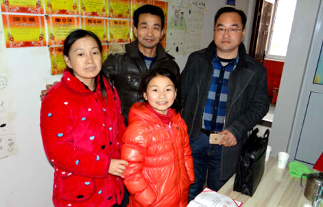
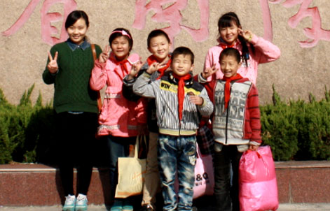
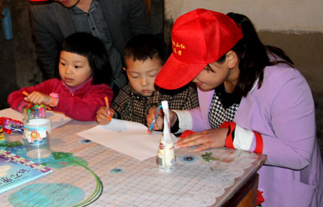

-

No.01 郑 伟芜湖交警支队高速一大队二中队中队长
[详细介绍] -

No.02 陶定霞（女）镜湖出租车公司驾驶员
[详细介绍] -

No.03 徐 龙芜湖运泰汽车运输集团有限责任公司南陵运山公司客车驾驶员
[详细介绍] -

No.04 章 枫芜湖荟萃中学教师
[详细介绍] -

No.05 张龙云（女）镜湖区赭山公共服务中心关工委常务副主任
[详细介绍] -

No.06 曹明霞（女）弋江区火龙岗中心学校教师
[详细介绍] -

No.07 沈永俊芜湖发电厂工人
[详细介绍] -

No.08 陈晓兰（女）三山区人民检察院党组成员、纪检组组长
[详细介绍] -

No.09 何 和芜湖市公安局交警支队大桥大队中队长
[详细介绍] -
No.10 任士福无为县开城镇羊山村潘岗自然村村支书
[详细介绍] -

No.11 沈怀玉无为县图书馆副馆长
[详细介绍] -

No.12 张知明芜湖县委宣传部宣传科长
[详细介绍] -

No.13 唐 瑭（女）共青团南陵县委员会科员
[详细介绍] -

No.14 付玉娥（女）南陵县家发镇人民政府创建办办事员
[详细介绍] -
No.15 汪飞燕（女）繁昌县人民医院护士
[详细介绍]